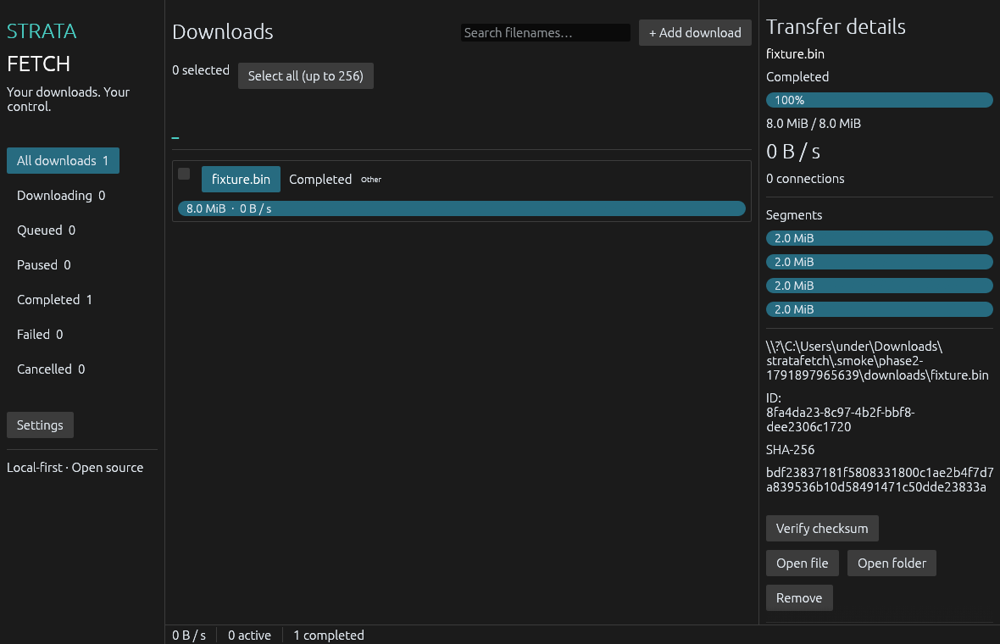

Your downloads.
Your control.
A local-first desktop download manager with verified HTTP ranges, recoverable checkpoints, and one engine for the desktop, CLI, and browser bridge. No ads, accounts, or telemetry.
Windows alpha v0.1.0-alpha.1 is available. Windows x64 is locally tested; Linux and macOS remain unverified. All current binaries are unsigned. The final installer was blocked by application control here; its roundtrip remains unverified.

Control the transfer.
Keep the evidence.
- 01Add and organizePaste direct HTTP/HTTPS URLs, choose a destination, and optionally sort new files into extension-based folders.
- 02Set the paceChoose aggregate and per-job bandwidth, simultaneous downloads, and connections. Queue by priority, schedule a start, or pause a selected batch.
- 03Resume and verifySafe resume checks both the remote validator and local segment hashes. Completed files carry SHA-256 and can be checked again.
Verification you can inspect
Deterministic fixtures test byte correctness, interruptions, malformed responses, queues, and recovery. The project makes no speed claim against IDM or other download managers.
| Check | Observed result |
|---|---|
| Complete Windows workspace suite | 32 substantive tests passed |
| Real native host → IPC → download | Origin checks, errors, recovery and SHA-256 passed |
| 4 GiB streaming transfer | About 18.8 MiB sampled peak working set |
| Per-user installer | Isolated install/uninstall preserved a user file |
Still a development preview
Actual browser extension flows, a full native keyboard/accessibility review, disk-fault injection and cross-user IPC testing remain open. All validation runs locally; GitHub Actions is disabled. Tray integration, notifications, authenticated requests and adaptive segmentation are future work.
See every release gate